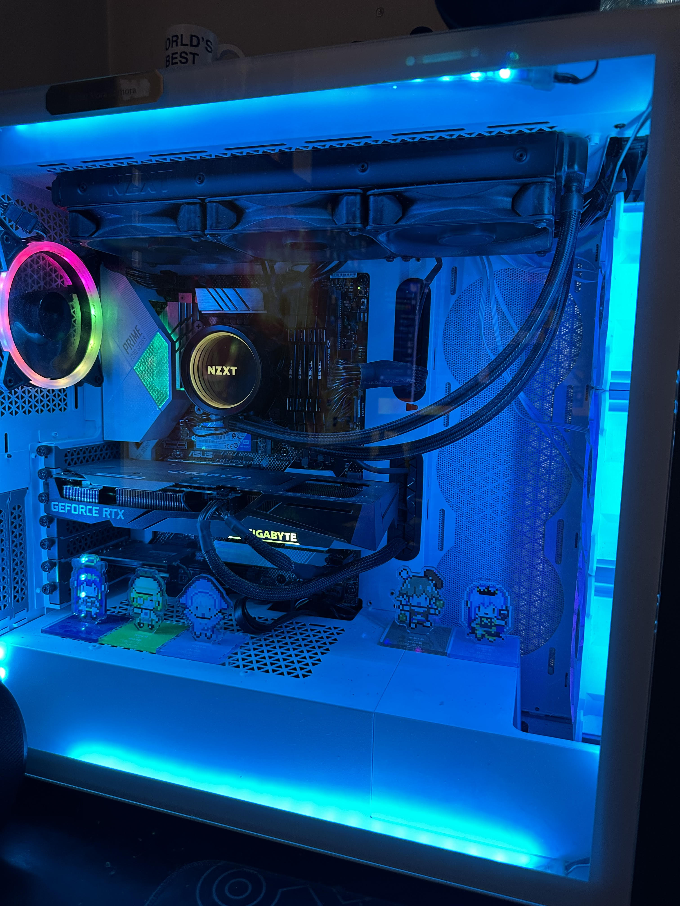

More About Me

How I got into the tech world
The image on the right is of my current computer. I first built it back when I was in highschool. Some of my friends had computers themselves, but I've never thought of getting one until then. Long story short; during the summer I earned enough money and had done my research about what parts to get and built it. Computers were really interesting, which kept me going. A few upgrades were made and this is how is currently looks.
Why I am becoming a Programmer
I hear that many programmers get paid a decent amount and it is a career you can always improve in and new opportunities. With improvement comes promotions and that's why I want to be a programmer. It's a job where you can expand your knowledge in and get rewarded with it too. I like learning new things and programming seemed interesting and a promising career.